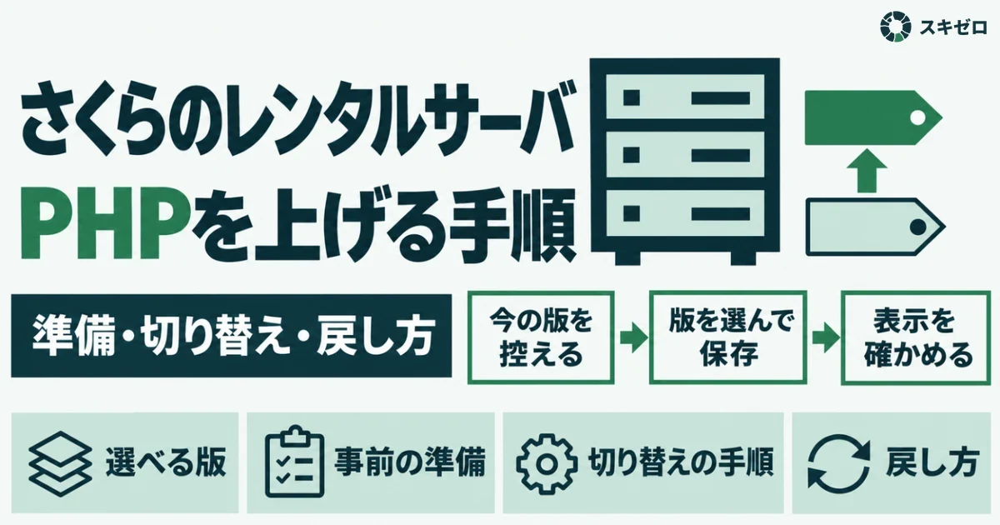
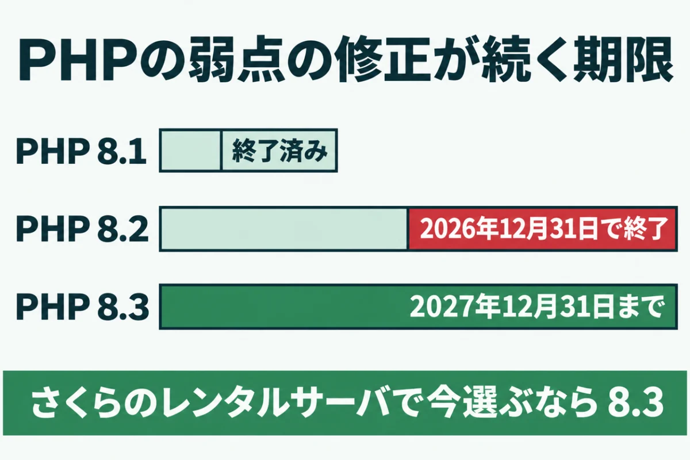
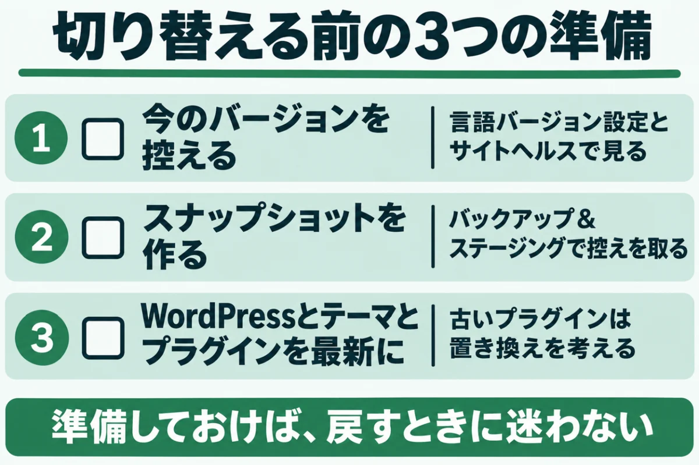
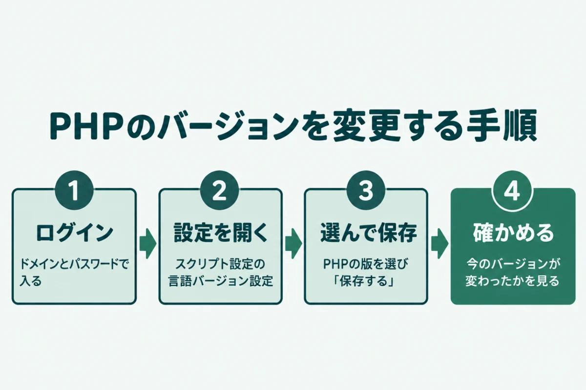
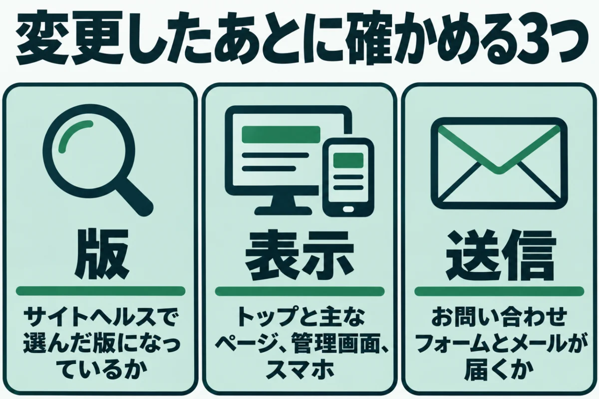
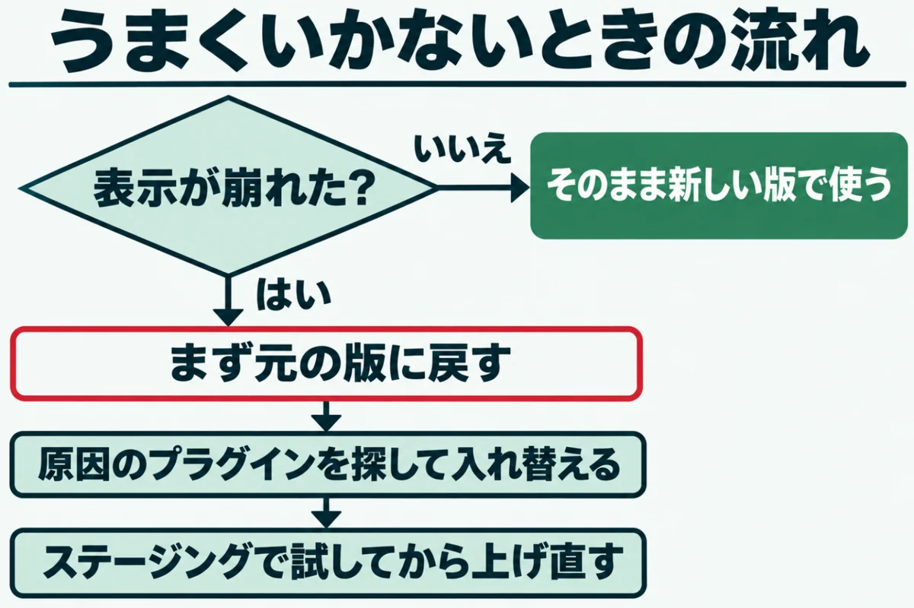

さくらのレンタルサーバでPHPのバージョンを変更する手順8.3への上げ方と戻し方

「さくらのレンタルサーバのPHPを上げたいけれど、サイトが崩れたらどうしよう」と迷っていませんか？
切り替えそのものは、サーバーコントロールパネルから数分で終わります。ただ、さくらのレンタルサーバは古い版でも自動では上がらないので、自分で動かない限りそのままです。
この記事では、さくらのレンタルサーバでPHPのバージョンを変更する手順を、準備から順に紹介します。うまくいかなかったときの戻し方もまとめました。
公式マニュアルと、運営者が自社サイトでPHPを上げたときに起きたことをもとに書いています。作業の前に一度通して読んでおくと安心です。
さくらのレンタルサーバでPHPのバージョンを変更する前に知っておきたいこと

さくらのレンタルサーバでPHPを変更する前に、どのバージョンを選べばよいかを決めておきましょう。あわせて、さくらインターネットがPHPの古い版をどう扱っているかも知っておくと迷いません。
この2つを押さえておくと、なぜ今切り替えるのかがはっきりします。切り替えの手順そのものより先に、順に確かめてください。
選べる版と、今選ぶならどれか
php.netによると、PHP 8.2の弱点の修正は2026年12月31日で終わります。8.3は2027年12月31日まで続き、WordPress公式も8.3以上を勧めている状況です。
2026年10月のさくらインターネットのお知らせでは、選べる最も新しい版は8.3でした。今から選ぶなら、8.3にしておくと1年ほどは切り替えずに済みます。サポート終了の意味は、PHPのサポート終了とは？放置の危険と確認・更新の手順｜8.2は2026年末で終了で紹介しました。
古い版のままでも自動では上がらない
さくらインターネットは2023年9月にPHPの提供方針を改めました。サポートが終わった版も、提供を続ける形です。小さな版上げも、自動ではなく利用者が自分で行う形に変わっています。
つまり、何もしなければ契約時の古い版のまま動き続けるのです。公式の案内には、重大な弱点が見つかれば予告なく提供を終える場合があるとも書かれています。何年も前に契約したサーバーほど、今の版を一度きちんと確かめておきたいところです。
さくらのレンタルサーバでPHPのバージョンを変更する前の3つの準備

さくらのレンタルサーバでPHPのバージョンを変更する前に、3つの準備を済ませておくと安心です。切り替えは数分で終わりますが、準備を飛ばすと戻すときに手間取ります。
どれもサーバーコントロールパネルとWordPressの管理画面だけでできる作業です。特に、何年も手を入れていないサイトは念入りに確かめてください。
① 今のPHPのバージョンを控える
まず、今のPHPのバージョンを確かめて控えておきましょう。さくらのレンタルサーバでは、「スクリプト設定」の「言語バージョン設定」に今の版が表示されます。WordPressなら、「ツール」の「サイトヘルス」にある「情報」タブでも見られる仕組みです。
今の版を控えておけば、戻すときに迷いません。契約した時期によって初めから入っている版が違うので、思っていたより古いこともあります。WordPressのバージョンを確認する方法（管理画面と外からの両方）で紹介しました。
② バックアップ&ステージングで控えを取る
スタンダード以上のプランでは、無料の「バックアップ&ステージング」が使えます。サーバーコントロールパネルの「バックアップ」から開いてください。サーバーとは別の場所に、www配下のファイルをスナップショットとして最大8つまで残せる仕組みです。
WordPressなら、データベースもあわせて控えられます。切り替えの直前に1つ作っておけば、困ったときに戻す先ができるでしょう。ライトプランとお試し期間中は使えないため、FTPなどで手元に控えを取ってください。
③ WordPressとテーマ、プラグインを最新にする
古いテーマやプラグインは、新しいPHPに対応していないことがあります。切り替えの前に、WordPress本体、テーマ、プラグインを最新にしておきましょう。公式マニュアルも、WordPressの最新版はおおむね最新のPHPに対応すると案内しています。
何年も更新されていないプラグインは、この機会に置き換えを考えてください。本体が何年分も古いときは、一気に上げず段階を踏むのが安全です。WordPressを何年も更新していないときの安全な更新手順｜一気に上げずに段階的にで紹介しました。
さくらのレンタルサーバでPHPのバージョンを変更する手順

PHPの変更は、サーバーコントロールパネルの言語バージョン設定から行います。公式マニュアルの手順に沿って、画面の名前もそのまま載せました。
画面の配置は変わることがあるので、見つからないときは公式マニュアルの最新の画面で確かめてください。作業は、サイトを見る人が少ない時間帯に行うと安心です。手順は大きく分けて4つあります。
ドメインとパスワードでログインする
サーバーコントロールパネルには、初期ドメインか追加したドメインと、そのパスワードでログインします。メールアドレスとメールのパスワードで入ると、メールの設定しか表示されない仕組みです。
PHPの設定項目が見当たらないときは、入り方を見直してください。初期ドメインは「○○.sakura.ne.jp」の形で、契約時のメールに書かれています。パスワードが分からないときは、無理に試さず再設定の手順を踏みましょう。
言語バージョン設定で版を選んで保存する
左のメニューの「スクリプト設定」から「言語バージョン設定」を開きます。PHPのバージョンの欄で、変えたい版を選んで「保存する」を押してください。
画面に表示される今のバージョンが、選んだ版に変われば切り替えは完了です。保存した時点ですぐに新しい版で動き始めます。そのため、保存したらすぐにサイトの表示の確かめに移りましょう。一度に大きく上げるのが不安なら、間の版を1つずつ試して確かめる方法もあります。
CGIとモジュールのどちらで動かすか
さくらのレンタルサーバのPHPには、CGIとモジュールの2つの動かし方があります。CGIは全プランで使え、モジュールはスタンダード以上のプランでPHP 7以上なら選べる仕組みです。
モジュールで動かすときは、版を選ぶときに「モジュール」にチェックを入れます。迷ったら、今の動かし方を変えずに版だけを上げるのが無難でしょう。版と動かし方を一度に変えると、不具合が出たときにどちらが原因か分かりにくくなります。
さくらのレンタルサーバでPHPのバージョンを変更したあとの確認

さくらのレンタルサーバでPHPのバージョンを変更したら、その場でサイトの動きを確かめましょう。公式マニュアルも、変更のあとは表示や投稿などの動作を確かめるよう案内しています。
確かめる順番を決めておけば、見落としを減らせるでしょう。崩れに気づくのが早いほど、戻す判断もしやすくなります。確かめる項目は、版、表示、送信の3つです。
サイトヘルスと表示を確かめる
WordPressの「ツール」の「サイトヘルス」で、「情報」タブのサーバーの欄を開きます。PHPの版が選んだものに変わっていれば、反映は済んでいるはずです。
続けて、トップページと主なページ、管理画面を開いて崩れがないかを見てください。運営者は自社サイトでPHPを上げたとき、前後で全ページの表示を比べて確かめました。スマホでも、主なページを開いておくと安心です。英語のエラー文や真っ白な画面が出たら、次の章の手順に進みましょう。
フォームとメールの送信を確かめる
見た目が変わらなくても、お問い合わせフォームが動かなくなっていることがあります。フォームのプラグインは、PHPの機能を多く使うためです。
切り替えのあとに、自分あてに1通送ってみてください。自動返信のメールと管理者あてのメールが、両方とも届くかを見ておきましょう。予約や決済のプラグインを使っているなら、それも1回ずつ試しておくと安心です。届かないときは、プラグインの版と、エラーの記録を確かめていきます。
さくらのレンタルサーバでPHPのバージョンを変更してうまくいかないとき

PHPを変えて表示が崩れても、元の版に戻せばすぐに直ることがほとんどです。慌てずに、戻してから原因を探す順番で進めましょう。
戻したままにせず、原因を取り除いてから上げ直すところまでが作業です。古い版を使い続ける期間は、できるだけ短くしてください。戻す、探す、試すの順に、3つの手順で進めていきましょう。
まず元の版に戻す
表示が崩れたら、言語バージョン設定で控えておいた元の版を選び直して保存します。公式マニュアルによると、元の版に戻した設定はすぐに反映されるとのことです。
戻したら、サイトが元どおり表示されるかを確かめましょう。それでも直らないときは、PHPではなくテーマの更新など別の作業が原因のことがあります。切り替えの前に作ったスナップショットから戻す方法も考えてください。戻したあとは、どの画面でどんなエラーが出たかを書き留めておくと、原因探しが早くなります。
原因のプラグインを探して入れ替える
よくある原因は、新しいPHPに対応していない古いテーマやプラグインです。運営者の自社サイト（別のサーバー）でも、PHPを8.3に上げたら管理画面にエラーが出ました。原因は、何年も更新していなかったプラグインでした。
エラー文に出てくるフォルダ名から、どのプラグインが止めているかを探せます。更新が止まったプラグインは、同じ働きの別のものに入れ替えるのが確実です。使っていないなら、削除まで済ませておきましょう。
ステージングで試してから上げ直す
原因が分かりにくいときは、ステージングで試してから本番を上げ直す方法があります。さくらのレンタルサーバのステージングは、作るときにPHPの版を選べる仕組みです。
本番のスナップショットを入れて、新しい版で動くかを先に確かめられます。ただし、ステージングは本番と別の環境なので、動きが完全に同じとは限りません。作成から90日で自動的に消えることも覚えておきましょう。試し終えたら、同じ版を本番で選び直してください。
URLを入れるだけで、PHPやWordPressの版、ログイン名など8項目を無料で判定します。登録はいりません。
無料で診断するさくらのレンタルサーバのPHPバージョンに関するよくある質問
PHPのバージョンを変えると、サイトは止まりますか？
切り替えはサーバーコントロールパネルで保存するだけで、サイトを止める操作はいりません。ただし、テーマやプラグインが新しい版に対応していないと、表示が崩れることがあります。切り替えは見る人の少ない時間帯に行い、崩れたらすぐ元の版に戻してください。戻した設定はすぐに反映されるので、止まる時間は短く抑えられるでしょう。
どのPHPのバージョンを選べばいいですか？
WordPressの公式サイトは、PHP 8.3以上を推奨しています。さくらのレンタルサーバでは、2026年10月時点で選べる最も新しい版が8.3でした。8.2は2026年12月31日で弱点の修正が終わるので、今から選ぶなら8.3が目安です。テーマやプラグインの配布ページで、8.3に対応しているかも先に確かめておきましょう。
ライトプランでもPHPのバージョンは変えられますか？
ライトプランでも、言語バージョン設定から版を変えられます。ただし、動かし方はCGIだけで、モジュールは選べません。バックアップ&ステージングも、ライトプランは対象外です。切り替えの前に、FTPなどでファイルを手元に控えておいてください。データベースも、管理画面から書き出して残しておくと安心でしょう。
WordPress以外のサイトでも、同じ手順で変えられますか？
言語バージョン設定は、WordPressを使っているかどうかに関係なく使えます。ただし、独自に作られたサイトは、古い書き方のプログラムが新しい版で動かない場合も考えられるでしょう。ionCube Loaderを使うCMSは、版が変わると止まる例があると案内されています。作った会社に、対応する版を確かめてから切り替えましょう。
自分で切り替えるのが不安なときはどうすればいいですか？
制作会社や保守を頼んでいる会社に、今の版と使っているプラグインを伝えて相談するのが確実です。今の状態が分からなければ、スキゼロの無料簡易診断で、PHPの版などを外から確かめられます。切り替えの作業そのものを頼みたいときは、対策作業として見積もりを出しますのでご相談ください。バックアップから表示の確認、不具合のときの戻しまでを含めて引き受けています。
まとめ
さくらのレンタルサーバでは、「スクリプト設定」の「言語バージョン設定」からPHPの版を変えられます。切り替えの前に、今の版の控え、スナップショット、プラグインなどの更新を済ませておきましょう。
切り替えたら、表示とフォームの送信を確かめ、崩れたら元の版に戻してください。古い版は自動では上がらないので、年内に8.3へ上げておくことをおすすめします。
まずは、今の状態を知るところから。
URLを入れるだけで、数十秒で判定が出ます。登録はいりません。